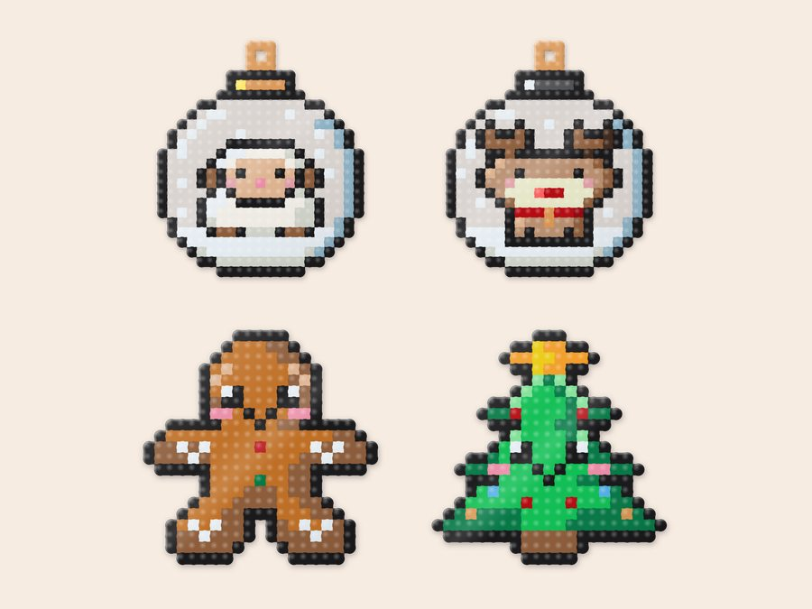
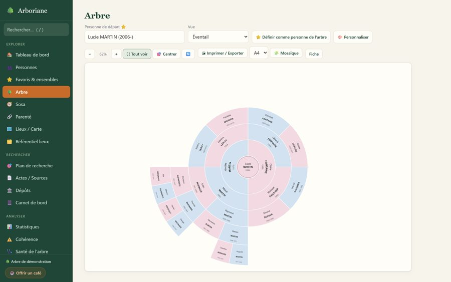
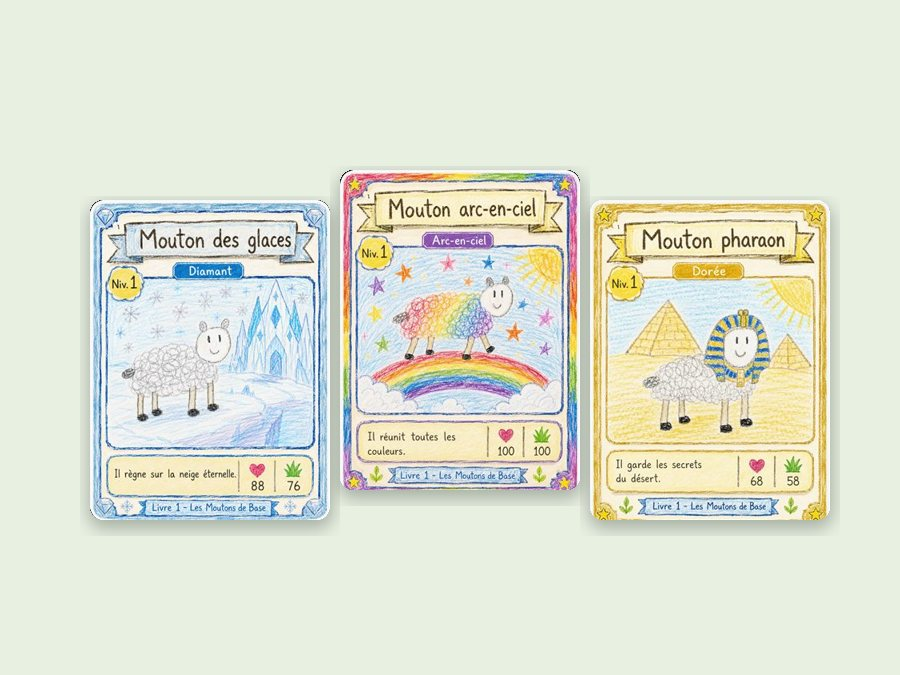

Pourquoi cette page ?
J'ai toujours aimé créer et partager : des tutos, des astuces, des petites trouvailles… mais toujours un peu dans l'ombre, de manière anonyme.
Aujourd'hui, avec l'IA, je peux aller beaucoup plus loin dans mes idées. Et je me suis dit que ce que je fabrique pour mes enfants, et pour moi, pourrait profiter à beaucoup plus de monde.
Alors voilà : j'ai créé cette page pour tout rassembler, et tout partager.
- 🎨 Perles à repasser
- 🌳 Généalogie
- 📚 Révisions
- 🎲 Jeux
- 💍 Argile polymère
- 🖨️ Impression 3D
- ✂️ Découpe laser
Mes projets
Gratuits, en français, sans compte.

Perlinette
Dessine tes patrons de perles à repasser, transforme une image en motif et imprime ta plaque à taille réelle. Plus de 550 modèles et un mode enfant. Sur téléphone, tablette ou ordinateur, sans rien installer.
Ouvrir Perlinette →
Arboriane
Un atelier de généalogie sourcée qui reste sur ton ordinateur : tes documents deviennent des preuves, tes preuves une histoire de famille.
Découvrir Arboriane →
Le Livre de Moutons
Le jeu de cartes Scratch d'Alexandre, avec un tutoriel en 14 leçons pour apprendre à le refaire pas à pas, et un vérificateur de projet.
Découvrir le tuto →En préparation
J'ai mille idées à la seconde… voici ce qui arrive.
Envie de suivre la suite ?
Je partage tout au fur et à mesure : les projets, les tutos, les astuces et les coulisses.
Tout est gratuit. Si mes projets te servent, tu peux m'offrir un café : ça m'encourage à continuer.
☕ M'offrir un café